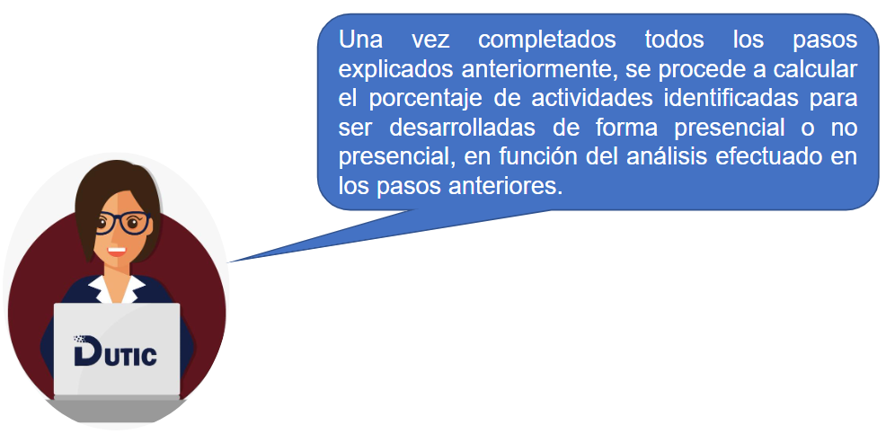
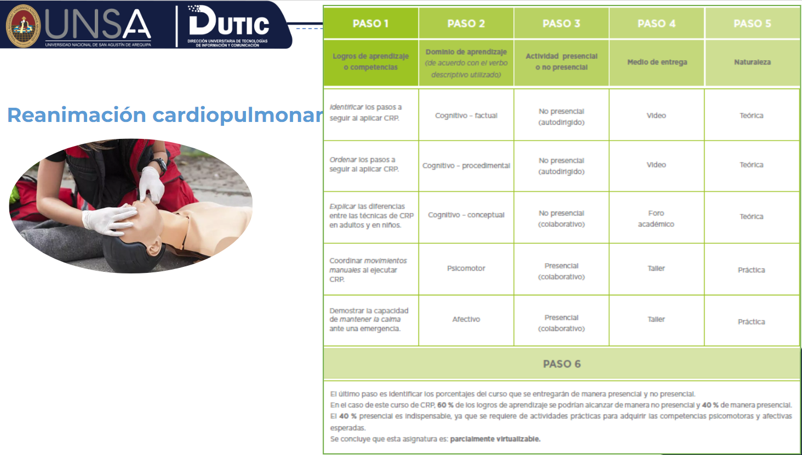
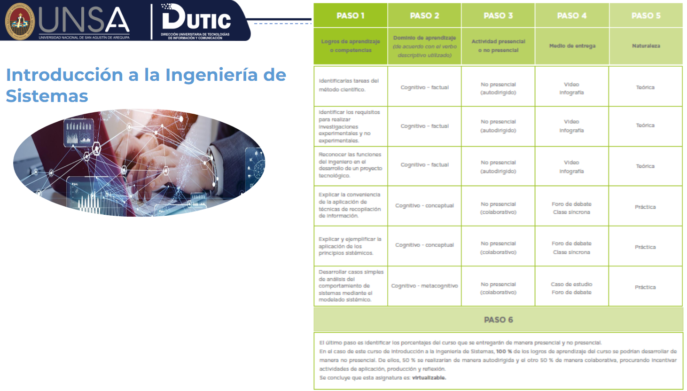
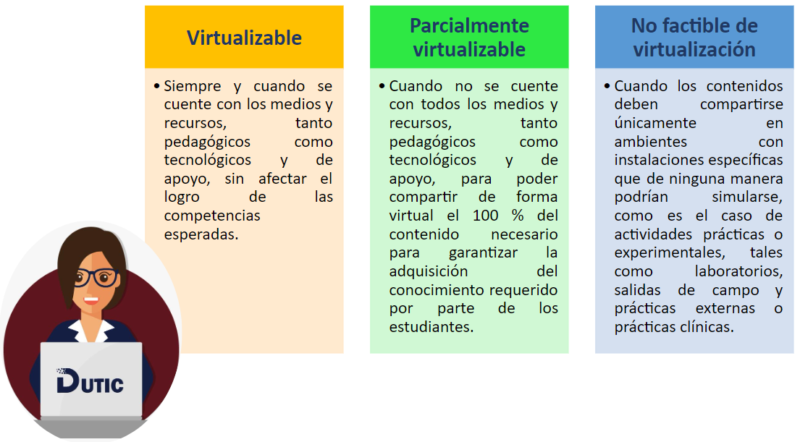

Módulo 1
6. Cálculo del porcentaje de entrega presencial o no presencial de la asignatura

Ejemplos


Denominación de los cursos según su nivel de virtualización

Obra publicada con Licencia Creative Commons Reconocimiento Compartir igual 4.0